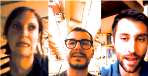
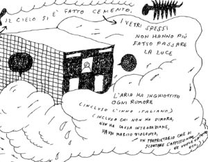

{#13} Del vento caldo dell’estate
chiacchiere coronavirali, ecosistemi, Humboldt
In questo numero:
- Un saluto ecosistemico
- Libere letture: si parte
- Sotto un ipotetico ombrellone
- Tavola videotonda #3
- Spiriti della quarantenaBentornati al nostro appuntamento occasionale!
Siamo sempre quelli di EXTEMPORANEA… ma i più attenti di voi avranno notato che l’indirizzo da cui vi scriviamo è cambiato – e che siamo approdati su Telegram.
Cosa è successo? Beh, il nostro portfolio s’arricchisce, le nostre skills si diversificano, si accostano nuovi collateral, si attivano synergies. Per valorizzare i nostri asset è arrivato il momento di fare una joint venture assieme ai partner che hanno fatto un bet con noi negli ultimi mesi, e di piazzarci nel grande marketplace of ideas.
Ma non temete! Con immensa gioia possiamo confermare la nostra presenza a Festivalettura, per un’edizione che si preannuncia davvero speciale. L’appuntamento sarà come sempre a Mantova (e online) dal 9 al 13 Settembre. In preparazione al festival, stiamo già partendo con un ricco programma di attività estive.
Dopo aver parlato di “bit” a Scienceground 1, di “dati” a Scienceground 2, i “microbi” di Sciencegroud 1.5 ci hanno portato a interrogarci sulla natura stessa della nostra identità: un tutt’uno in lotta contro le avversità esterne, o un ricco ecosistema dai confini indefiniti che convive in maniera complessa con l’ambiente?
Ecco allora che il tema di Scienceground 1.66666… non poteva che essere: ECOSISTEMI.
Qui potete trovare una guida ai percorsi di Festivaletteratura, e qui potete contribuire alla realizzazione della prossima edizione.

“Quando descrisse i tre modi in cui la specie umana influenzava il clima, elencò la deforestazione, l’irrigazione sconsiderata e, forse più profeticamente, le “grandi masse di vapore e gas” prodotte dai centri industriali. Nessuno prima aveva considerato la relazione fra genere umano e natura in questo modo.”
Andrea Wulf, “L’invenzione della natura”, riferendosi a scritti di Humboldt risalenti al 1844
Se ci seguite già dall’anno scorso, saprete che ci piace leggere libri insieme e discuterne. Non propriamente dei “gruppi di lettura” – con scadenze fisse e obbligo di aver finito il libro. Le abbiamo chiamate libere letture, e la prima che proponiamo quest’anno è L’invenzione della natura. Le avventure di Alexander Von Humboldt, l’eroe perduto della scienza di Andrea Wulf.
Nell’epoca in cui le scienze si armavano di malta e mattone per innalzare insormontabili barriere atte a separare le varie discipline, e la parola “scienziato” (scient-ist, specialista, professionista della conoscenza) veniva coniata, le ultime due generazioni di “filosofi della natura” hanno attraversato l’Ottocento mentre — storpiando un celeberrimo detto di Gramsci — il vecchio mondo stava morendo, e quello nuovo si affrettava a comparire.
Humboldt, Lyell, Wallace, Cuvier, Lamarck, Somerville, Liebig, Charles Darwin — e la lista potrebbe allungarsi. La loro intelligenza collettiva generò la concezione moderna del mondo naturale e del nostro posto in esso. Ma non solo: la loro attività di ricerca produsse anche l’intuizione di trovarsi al centro di “una rivoluzione sulla faccia della terra”. Era iniziata l’età industriale, la modernità, l’epoca geologica che dall’homo sapiens prende il nome stesso: l’antropocene.
Sul nostro sito puoi trovare ulteriori informazioni su dovecomequandoperché chiacchierare di questo libro; oppure puoi direttamente chiacchierare di questo libro sul canale Telegram dedicato.

Che altro leggere o mettersi in cuffia in questa estate bizzarra? Consigliamo:
- Sintomi del presente – “Scienza”, Istituto Italiano per gli Studi Filosofici – 02/07/20, a cura di Iacopo Chiaravalli e Rolando Vitali, con Edoardo Boncinelli e Matteo Polettini (a partire da 15′). “La combinazione oppositiva tra due scienziati diversi circa il significato della scienza in rapporto alla filosofia […]. Da un lato una visione quasi angelicamente ottimistica, risolutrice in progress delle contraddizioni interne alla ricerca e concomitante col sorgere della/e tecniche; dall’altra un’immersione realistica nella dimensione sociale, conflittuale, a punteggiature antinomiche, del sapere scientifico e tecnico, fino a pervenire finanche ad una rivalutazione storica dell’antiscienza […]” (da un commento Facebook).
- Un popolo che abita, Paolo Missiroli, Effimera – 10/02/20. Un commento al libro di Malcom Ferdinand, Une écologie décoloniale. Penser l’écologie depuis le monde caribéen. “Il testo si struttura, in poche parole, come una critica all’ambientalismo liberale, cioè all’ambientalismo che pensa, da un lato, la crisi ecologica come un portato dell’uomo en tant que tel, e dall’altro ricerca soluzioni tecnico-ingegneristiche a tale crisi, che essa sia il green capitalism o la geo-ingegneria.”
- Just use your thinking pump, Jessica Riskin, The New York Review of Books – 02/06/20, recensione di The Scientific Method: An Evolution of Thinking from Darwin to Dewey
by Henry M. Cowles. “Here, then, is the answer to when, where, and how “the scientific method” originated: not in any field or practice of science, but in the popular, professional, industrial, and commercial exploitation of its authority. This exploitation crucially involved the insistence that science held an exclusive monopoly on truth, knowledge, and authority, a monopoly for which “the scientific method” was a guarantee.” - Chi fa scienza ha un ruolo politico, Reo Tempo – 29/06/20. “La specializzazione a oltranza delle competenze tecniche impedisce agli individui di comprendere il mondo nella sua globalità e la delega delle decisioni a un’aristocrazia (sia pur eletta) porta all’accaparramento della natura da parte di una minoranza.”

Fatto salvo per mascherine e flaconi igienizzanti ovunque, sembrerebbe che tutto sia tornato a come-era-prima. Già è difficile ricordarsi dei mesi del lockdown, e ancor più difficile è immaginarsi una eventuale recrudescenza del virus.
Molte persone però sono state segnate profondamente da questa esperienza. Tra queste, i medici e gli operatori sanitari in prima linea hanno reclamato attenzione rispetto alla complessità delle problematiche che affliggono il sistema sanitario. Per poche settimane sono state sotto i riflettori, poi questi si sono spenti.
Noi proseguiamo le nostre chiacchiere coronavirali: testimonianze di medici impegnati in prima linea durante l’emergenza COVID. Durante la prima e la seconda puntata è emersa chiaramente l’urgenza di de-ospedalizzare e di ripensare la sanità a partire dai servizi locali.
Nel nostro terzo video abbiamo allora intervisto medici di base e di territorio: Andrea Canini (Medico di Medicina Generale – USCA Bologna), Rosario Capozzolo (Medico di Continuità assistenziale – Porto Recanati), Maria Montori (Medico di Medicina Generale – Bologna), Valentina Spada (Medico di Medicina Generale e Psicoterapeuta – Brianza) e Francesco Sintoni (Medico di Sanità Pubblica – Dipartimento di Prevenzione Cesena). Modera Valentina Manfredini (Università di Trieste).

A tratti quasi tangibili, poi virtuali, gli spiriti della quarantena vivono ancora tra di noi. Manda il tuo materiale (poesie, riflessioni, disegni, registrazioni ambientali, ritagli di giornale, biglietti del treno etc.) a scienceground@festivaletteratura.it, e insieme decideremo cosa farlo diventare. Una fanzina? Un podcast? Una chiacchierata?
Auto: La validità della mia patente europea è stata prorogata in Italia, ma non ancora nel resto dell’UE: non posso dare il cambio alla guida. Per scongiurare i colpi di sonno cantiamo e ci raccontiamo trame di libri non ancora scritti. Tutto ciò che non è transito è illegale – ci han detto. Nei pressi di ognuna delle tre frontiere il timore ancestrale per l’autorità ci fa spegnere la radio. Prepariamo i documenti obbligatori e ripassiamo cosa dire. Per tre volte la scena del controllo avviene soltanto in libri non scritti.
Nave: La voce “nombre del barco” nell’ennesima autocertificazione ci getta nello sgomento. Qualcuno lo conosce? Supero la prova della temperatura, mentre alcuni passeggeri mascherati vengono lasciati a terra. Le successive ventotto ore sono un’esperienza più immaginata che vissuta: rinchiusa senza mai uscire in una cabina cubica e scricchiolante, il tempo scandito solo da annunci di altre scartoffie da compilare.
[Sopra: Andrea De Franco, Spiriti della quarantena, frammento; Algoritmo Umano, Di(zion)ario di viaggio, frammento]